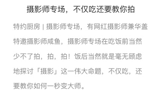

达人页面 —— 头部的卡片 + 顶端固定切换按钮
使用了MXSegmentedPager
体验详情页 —— 体验简介的文字行距
NSMutableAttributedString * attributedString1 = [[NSMutableAttributedString alloc] initWithString:activityIntroLabel.text];
NSMutableParagraphStyle * paragraphStyle1 = [[NSMutableParagraphStyle alloc] init];
[paragraphStyle1 setLineSpacing:14];
[attributedString1 addAttribute:NSParagraphStyleAttributeName value:paragraphStyle1 range:NSMakeRange(0, [activityIntroLabel.text length])];
[activityIntroLabel setAttributedText:attributedString1];

学到了两招利用宏减少代码量的方法
字体和字号
#define FONTWITHSIZE(frontSize) [UIFont fontWithName:@"MicrosoftYaHei" size:frontSize]
使用的时候
activityIntroLabel.font = FONTWITHSIZE(14.0);
直接输入RGB数字设置颜色
#define RGB(__r, __g, __b) [UIColor colorWithRed:(1.0*(__r)/255)\
green:(1.0*(__g)/255)\
blue:(1.0*(__b)/255)\
alpha:1.0]
使用的时候
activityIntroLabel.textColor = RGB(155, 155, 155);